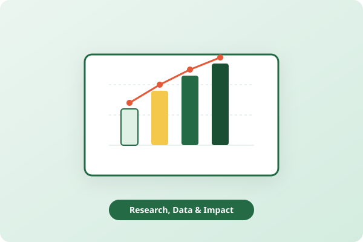

Research, Data and Continuous Improvement
We combine rigorous data collection, educational research, and field empathy to continually evaluate and elevate the quality of our learning interventions.
Rooted in Real Field Evidence
Good intentions alone do not guarantee learning gains. At Aakanksha Charitable Trust, every pedagogical tool and community intervention is tested, measured, and iteratively refined.
To ensure holistic insights, we synthesize intelligence across seven critical sources:
- ✔ Beneficiary Feedback
- ✔ Teacher Feedback
- ✔ Stakeholder Inputs
- ✔ Program Data
- ✔ Research Papers
- ✔ Field Observations
- ✔ Periodic Reports

The Continuous Improvement Framework
How feedback and metrics translate into real classroom quality upgrades.
Listen
Collect Feedback: Regular dialogues with school teachers, students, and village committees to capture grassroots challenges and suggestions.
Measure
Track Outcomes: Systematically logging attendance, book borrowing counts, and baseline vs. endline FLN assessment scores.
Understand
Analyse Insights: Evaluating quantitative trends alongside qualitative pedagogical research to pinpoint what works and what needs help.
Improve
Strengthen Programs: Updating learning kits, redesigning worksheets, and providing targeted teacher facilitation based on findings.
Why Evidence Matters in Grassroots Development
In non-profit development, evidence is the bridge between aspiration and lasting impact. When we track whether a child moves from halting letter recognition to fluent paragraph comprehension, we respect both the child's precious schooling years and the donor's philanthropic trust.
Unbiased reporting that shares both triumphs and constructive areas for improvement.
Directing volunteer time and learning materials precisely where need is highest.
Aligning field insights with state and national educational policies (e.g. NIPUN Bharat).
Collaborate on Educational Research & Field Studies
We welcome research scholars, interns, and academic evaluators to analyze datasets and study rural learning outcomes with us.